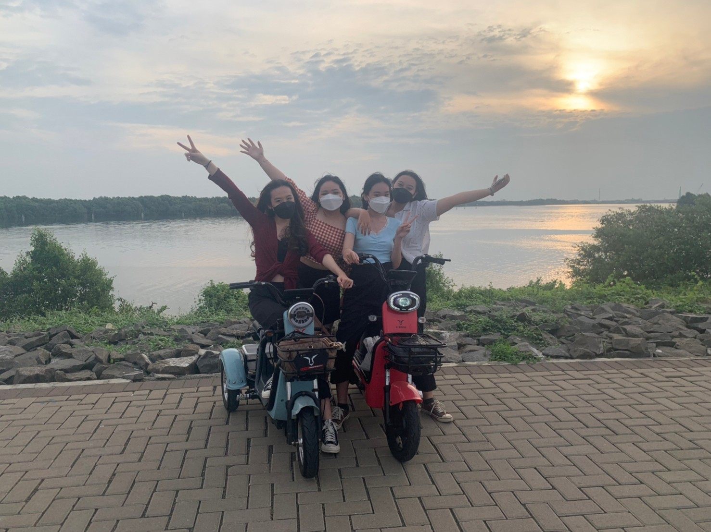

Cover Song (Lose - Niki) Salah satu hobi saya adalah bermain alat musik. Contohnya keyboard dan gitar. Video di samping merupakan tugas saya waktu masih SMA. Saya cover lagu lose - Niki. Sebenarnya saya tidak terlalu jago bermain alat musik, namun jika ada waktu luang saya suka melihat tutor di youtube dan mempelajari cara bermain instrumen nya. |
|
.png) |
Listen to song in every situation (Spotify addict) Saya senang sekali mendengarkan lagu menggunakan platform spotify. Saya benar-benar mendengarkan lagu di setiap situasi, contohnya seperti sedang beres-beres rumah, mandi, mengerjakan tugas, dalam perjalanan menuju kampus/tempat-tempat lain. Tiada hari tanpa mendengarkan musik bagi saya wkwk. p.s: arahkan kursor ke gambar di samping, maka akan keluar top 3 lagu yang sedang sering saya putar. |
Recommended place (Pantai Indah Kapuk 2) Saya ingin memberikan rekomendasi tempat main asik di Jakarta. Tepatnya di PIK 2, Jakarta Utara. Disana banyak sekali tempat makan dan juga ada rental sepeda scooter. Tempatnya adem, bagus, dan berada di pinggir pantai membuat suasana bersepeda semakin asik. Cocok dijadikan tempat untuk healing bersama dengan keluarga/teman maupun sendirian. |
 |
 |
 |
 |